1. Right click on the leftmost panel
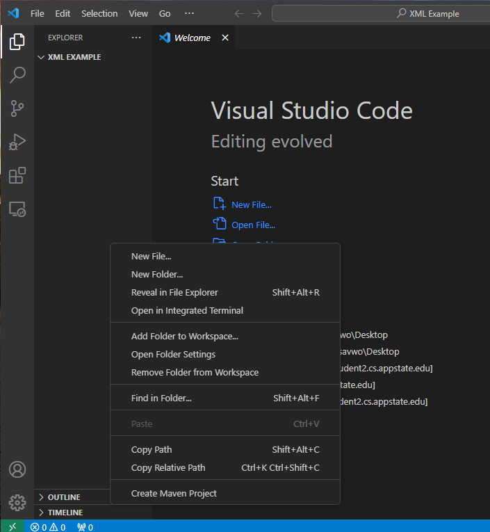
2. Select "New File" from the menu
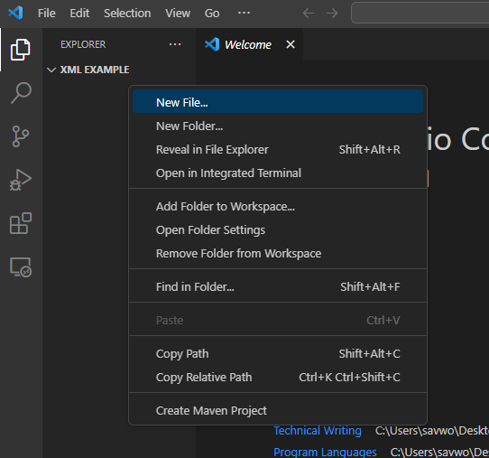
3. Name your file with the filename and .xml tag
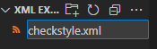
4. Double click on the file to open it
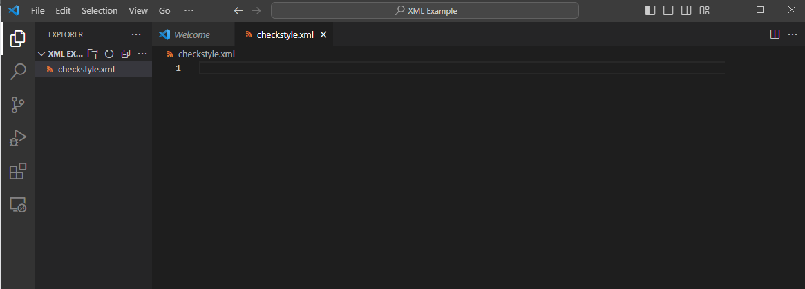
5. Type in the version number as the first line
This will typically be version 1 as you have just created the file
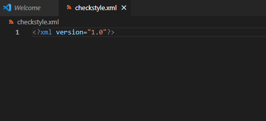
6. On a new line, insert the link to puppycrawl as the doc type
The insertion is as follows for your convenience: "-//Puppy Crawl//DTD Check Configuration 1.2//EN"
"http://www.puppycrawl.com/dtds/configuration_1_2.dtd"
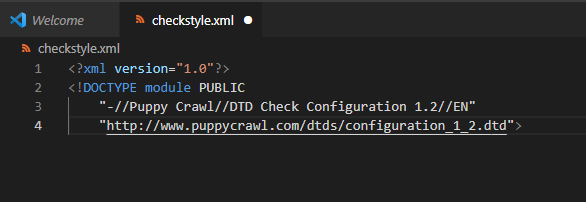
10. Insert your first rule as a module named LineLength
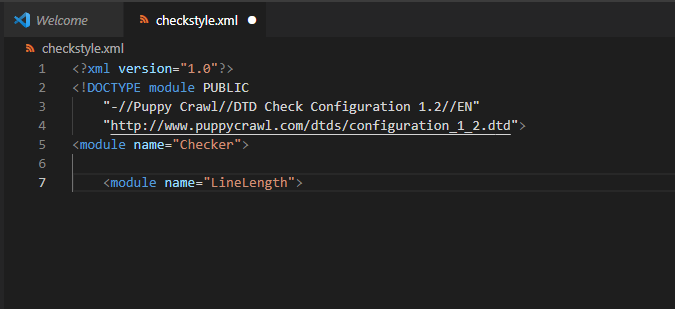
11. On a new line, enter the name of the check as "max"
"max" is the maximum number of chracters on a line
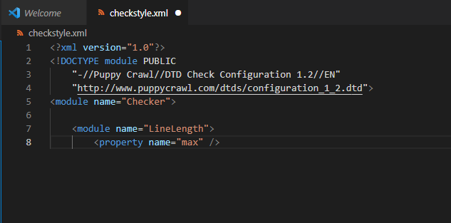
12. Enter the value as the number of characters you would like to constrain to
In this example, 80 characters is the maximum
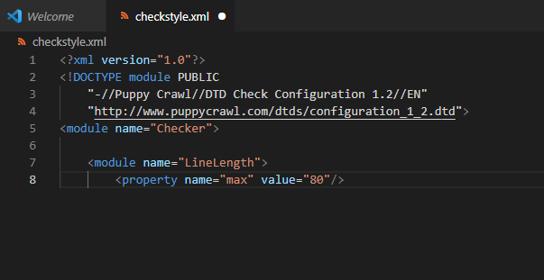
13. On a new line, enter "/module" in arrows to finish the rule
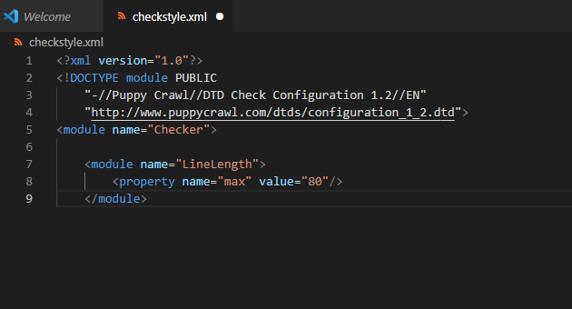
14. On the last line of the file, enter another "/module" in arrows
This will close the checkstyle document
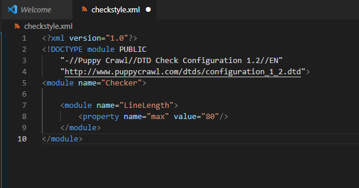
15. Visit the puppycrawl website to see which other checks you would like to implement
https://checkstyle.sourceforge.io/checks.html
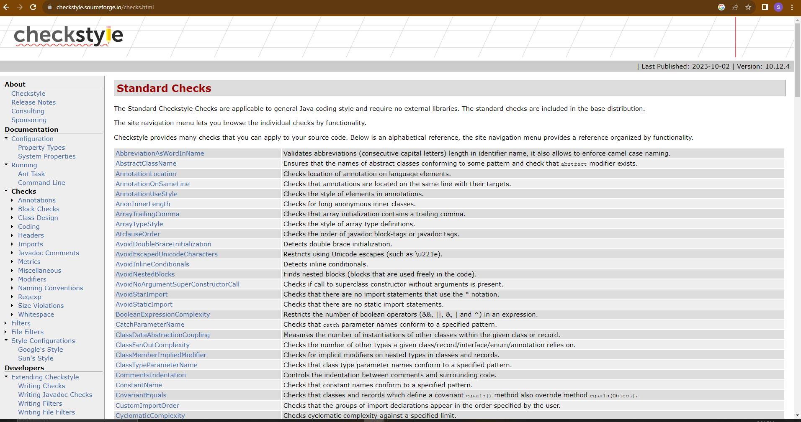